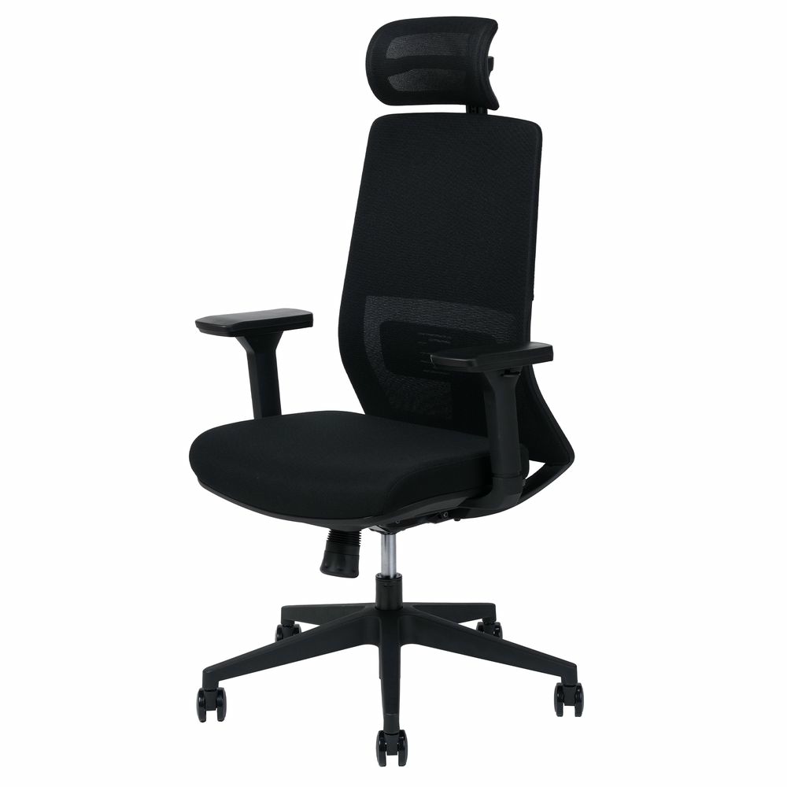
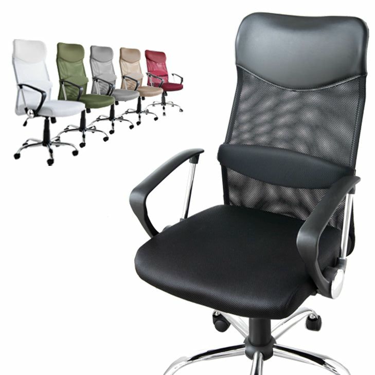
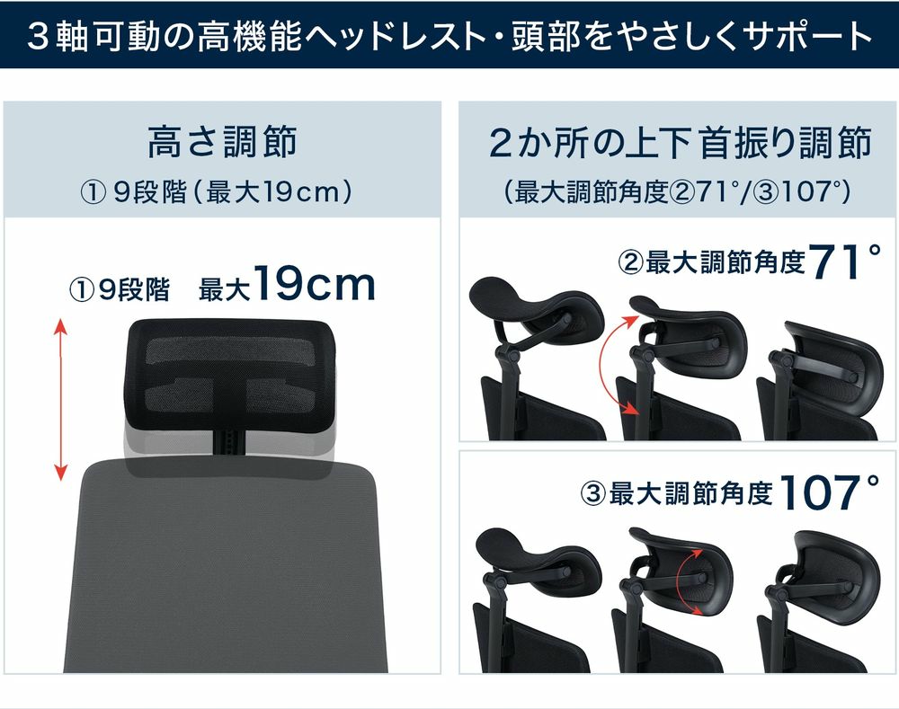
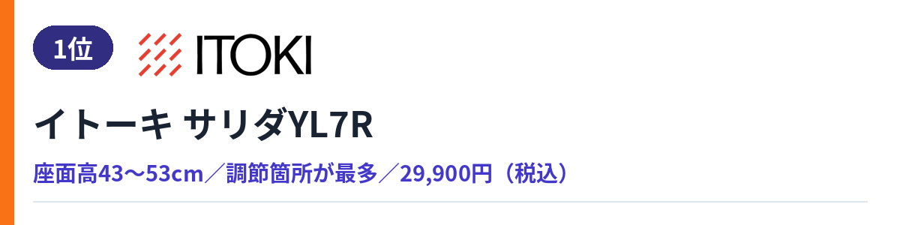
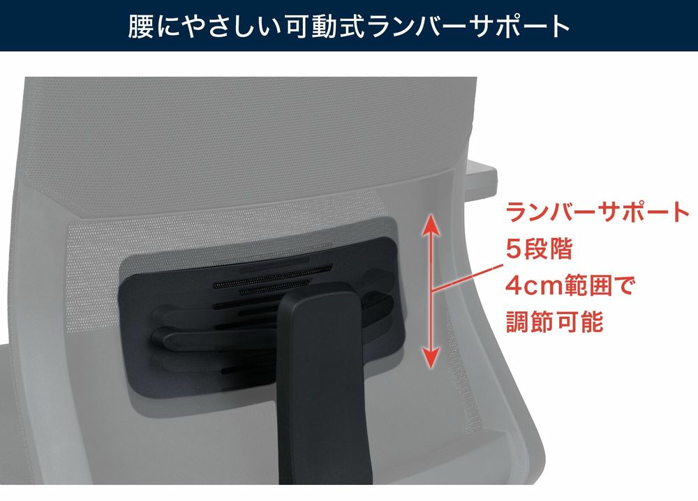
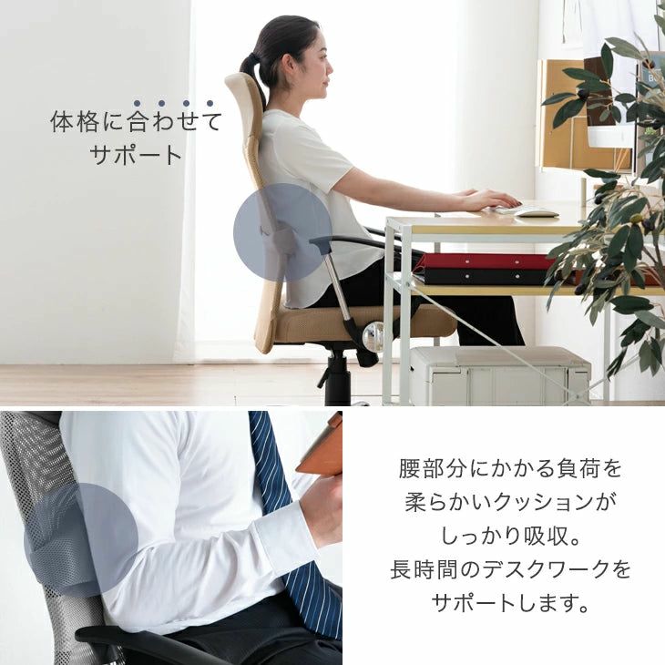
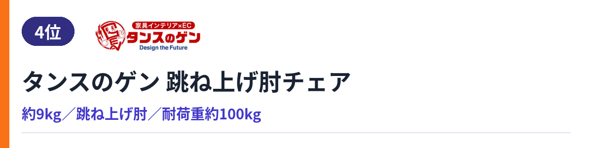

在宅ワークの椅子おすすめ5脚比較｜座面高・重さ・耐荷重の公式スペックで選ぶ


こんにちは、カグヤです。在宅ワーク向けの椅子5脚を、調節できる箇所・サイズと重さ・耐荷重という3つの軸で、公式スペックのまま比べます。
在宅ワークの椅子選びで失敗しやすいのは、見た目や価格だけで決めてしまい、座面の高さ、肘掛けの形、本体の重さが自分の体や部屋に合わないことです。この記事では、比べる軸を「調節できる箇所の数」「サイズと重さ」「耐荷重とキャスター」の3つにそろえ、在宅ワーク向けの椅子5脚を公式仕様で比較します。あわせて、デスクや収納もまとめて探せる家具通販サイトとして、オフィスコムと家具350を紹介します。価格は変わりやすいため、個別商品の価格は公式で確認できたものだけを書き、確認できないものは「公式サイトで確認」としています。
- 総合1位・長時間作業を快適にしたいなら：イトーキ サリダYL7R（調節できる箇所が5脚で最も多い）
- 背中までしっかり支えたいなら：タンスのゲン 腰楽メッシュチェア（ハイバック・耐荷重約120kg）
- 部屋になじむシンプルさを重視するなら：無印良品 ワーキングアームチェア
- デスク下に収めて部屋を広く使いたいなら：タンスのゲン 跳ね上げ肘チェア（約9kg）
- 狭い場所や予備の椅子なら：サンワサプライ OAチェア SNC-A1（W520×D520mm・7.3kg）
かんたん比較カード｜5脚を先に眺める

| 商品 | 主な特徴 | 座面高 | 本体重量 | 価格（税込） | 総合点 |
|---|---|---|---|---|---|
| イトーキ サリダYL7R | 調節箇所が多い・ヘッドレスト付き | 約43〜53cm | 16.5kg | 29,900円 | 4.6／5.0 |
| タンスのゲン 腰楽メッシュチェア | ハイバック・耐荷重約120kg | 45〜52cm | 約15kg | 公式サイトで確認 | 4.2／5.0 |
| 無印良品 ワーキングアームチェア | 背メッシュ・肘掛け取り外し可能 | 43〜53.5cm | 11.2kg | 9,990円 | 4.0／5.0 |
| タンスのゲン 跳ね上げ肘チェア | 跳ね上げ式の肘掛け・約9kg | 42.5〜50cm | 約9kg | 公式サイトで確認 | 3.9／5.0 |
| サンワサプライ OAチェア SNC-A1 | W520×D520mm・7.3kgのコンパクト設計 | 約38.5〜47.5cm | 7.3kg | 10,450円（メーカー参考価格） | 3.7／5.0 |
※横にスクロールできます。総合点は当サイト編集部の評価です（基準は次の節）。無印良品の本体重量は販売店の仕様欄による数値です。タンスのゲンの2脚は公式通販で価格が変動するため「公式サイトで確認」としています。
採点の基準｜この記事の比べ方

| 商品 | 調節のしやすさ | 狭い部屋への置きやすさ | 耐荷重・床への配慮 | 総合点 |
|---|---|---|---|---|
| イトーキ サリダYL7R | 4.9 | 3.6 | 4.4 | 4.6 |
| タンスのゲン 腰楽メッシュチェア | 3.8 | 3.4 | 4.8 | 4.2 |
| 無印良品 ワーキングアームチェア | 4.0 | 4.0 | 3.8 | 4.0 |
| タンスのゲン 跳ね上げ肘チェア | 3.6 | 4.6 | 4.0 | 3.9 |
| サンワサプライ OAチェア SNC-A1 | 3.2 | 4.9 | 3.2 | 3.7 |
採点は編集部の独自評価で、各項目5点満点です。根拠は公開されている仕様の数値に限っています。座り心地そのものは体格や好みで変わるため、点数は候補を絞るための目安として使ってください。座面の高さは床からの数値で表示されます。今使っているデスクの天板の高さを測ってから比べると、肘や足が窮屈になる失敗を避けられます。
ランキング早見表
| 順位 | 商品 | 向いている人 | まず確認すること |
|---|---|---|---|
| 1位 | イトーキ サリダYL7R | 1日の大半を座って過ごす人 | 置き場所の幅と、本体重量16.5kgを動かせるか |
| 2位 | タンスのゲン 腰楽メッシュチェア | 体格が大きめで、背中全体を預けたい人 | 座面の最低高さ45cmがデスクと合うか |
| 3位 | 無印良品 ワーキングアームチェア | リビングや寝室の一角で働く人 | サイズ幅65×奥行66cmが入るか |
| 4位 | タンスのゲン 跳ね上げ肘チェア | 仕事が終わったら片づけたい人 | 耐荷重約100kgの範囲に収まるか |
| 5位 | サンワサプライ OAチェア SNC-A1 | 限られたスペースで使う人、予備用がほしい人 | 総耐荷重80kgの範囲に収まるか |
今月のピックアップ｜椅子とあわせてデスク・収納も見直す
椅子を替えるタイミングは、デスクや収納も含めて作業場所全体を見直す良い機会です。オフィス家具を通販で探す場合はオフィスコム、価格帯を抑えた家具を探す場合は家具350が候補になります。どちらのサイトも、個別商品の価格は日によって変わるため、この記事では価格を断定しません。各サイトで当日の価格、送料、サイズを確認してから選んでください。
オフィスコムで家具を探すオフィス家具の通販サイトへ 家具350で家具を探す価格帯を抑えた家具の通販サイトへ各商品の詳説｜公式スペックで1脚ずつ見る
1位 イトーキ サリダYL7R｜調節機能を重視するならこれ

サリダYL7Rの製品写真（イトーキ公式ニュースルームに掲載された公式写真）

ランバーサポートの接写（イトーキ公式の説明画像）
| 本体サイズ | W655×D670×H1080〜1180mm（ヘッドレスト付きタイプ） |
| 座面高 | 約43〜53cm（10cmの範囲で上下） |
| ヘッドレスト | 9段階（最大19cm）の高さ調節＋2か所の首振り調節 |
| 腰の支え | ランバーサポートを4cmの範囲で5段階に調節 |
| 座面奥行 | 5.5cmの範囲で6段階に調節 |
| 背もたれ | 最大26°まで傾き、102°・111°・120°・128°の4段階で固定 |
| 肘掛け | 上下7段階、左右の角度は最大36°、前後は5cm（10段階） |
| 本体重量 | 16.5kg |
| 保証 | 最大3年（外観・表面仕上げ1年、機構部・可動部2年、構造部材3年） |
| 価格 | 29,900円（税込）※2026年11月25日に公式発表資料で確認 |
向いている人：1日の大半を座って過ごし、肘、腰、背もたれを自分の体に細かく合わせたい人。
良い点：調節できる箇所が多く、座面の奥行まで変えられます。保証が最大3年ある点も、長く使う前提では確認しておきたい材料です。
気になる点：本体重量は16.5kgあり、頻繁に動かす使い方には向きません。サイズも大きめなので、置き場所を先に確保しておきましょう。
イトーキ公式サイトで詳細を見る公式サイトへの通常リンクです2位 タンスのゲン 腰楽メッシュチェア｜背中までしっかり支えたいなら

腰楽メッシュチェアの製品写真（タンスのゲン公式本店）

着座イメージと腰まわりの支え（タンスのゲン公式本店の説明画像）
| タイプ | ハイバック（高さ107〜114cm） |
| 外寸 | 幅64〜66×奥行64〜66×高さ107〜114cm |
| 座面高 | 45〜52cm |
| 肘掛け | 固定式アーム（高さ64〜71cm）。可動式も選択可 |
| 腰の支え | 腰楽ランバーサポート付き |
| 本体重量 | 約15kg |
| 耐荷重 | 約120kg |
| キャスター | PUキャスター |
| 価格 | 公式通販サイトで当日の価格を確認 |
向いている人：体格が大きめで、背中全体を預けて座りたい人。耐荷重に余裕のある椅子を探している人。
良い点：耐荷重約120kgは、この比較の中では最も大きい数値です。ハイバックのため、背中まで支える形で候補に入れられます。
気になる点：肘掛けが固定式なので、デスクの天板の下に肘が当たらないか確認が必要です。座面の最低の高さが45cmのため、小柄な人やデスクが低めの人は足元が窮屈にならないかを見ておきましょう。
タンスのゲン公式サイトで詳細を見る公式サイトへの通常リンクです3位 無印良品 ワーキングアームチェア｜部屋になじませたいなら

| 本体サイズ | 幅65×奥行66×高さ89〜98.5cm |
| 座面高 | 43〜53.5cm |
| 肘掛け | 座面から18〜25cmの範囲で4段階に調節、取り外し可能 |
| 背もたれ | 背メッシュ |
| 本体重量 | 11.2kg（販売店の仕様欄による） |
| 価格 | 9,990円（税込）※2026年11月25日に公式ストアで確認 |
向いている人：リビングや寝室の一角で働き、部屋の雰囲気を崩したくない人。肘掛けを外してコンパクトに使いたい人。
良い点：シンプルな見た目で生活空間になじみやすく、肘掛けは高さを変えられるうえに取り外しもできます。
気になる点：ヘッドレストはないため、首や頭まで支えたい人には向きません。背もたれの角度や腰の支えを細かく調節したい場合は、サリダYL7Rと比較してください。
無印良品公式サイトで詳細を見る公式サイトへの通常リンクです
残り2脚は「軽さと片づけやすさ」の担当です。座る時間が短い人や、部屋を広く使いたい人に向きます。
4位 タンスのゲン 跳ね上げ肘チェア｜デスク下に収めたいなら


跳ね上げ肘チェアの製品写真（タンスのゲン公式本店）

跳ね上げ式ロータリーアーム（タンスのゲン公式本店の説明画像）
| 外寸 | 幅61×奥行57×高さ82.5〜90cm |
| 座面高 | 42.5〜50cm |
| 本体重量 | 約9kg |
| 耐荷重 | 約100kg |
| 肘掛け | 跳ね上げ式ロータリーアーム |
| キャスター | PUキャスター |
| 価格 | 公式通販サイトで当日の価格を確認 |
向いている人：仕事が終わったら椅子をデスク下に収めて部屋を広く使いたい人。掃除や模様替えで椅子をよく動かす人。
良い点：約9kgと軽く、肘掛けを上げればデスク下に収めやすくなります。仕事と生活の切り替えの合図にしやすい形です。
気になる点：背中全体や頭まで預けて座りたい人には向きません。耐荷重は約100kgのため、余裕が必要な場合は腰楽メッシュチェアと比較してください。
タンスのゲン公式サイトで詳細を見る公式サイトへの通常リンクです5位 サンワサプライ OAチェア SNC-A1｜狭い場所・予備用に


OAチェア SNC-A1の製品写真（サンワサプライ公式サイト）
| 本体サイズ | W520×D520×H720〜810mm |
| 座面高 | 約38.5〜47.5cm |
| 本体重量 | 7.3kg |
| 総耐荷重 | 80kg |
| 価格 | 10,450円（メーカー参考価格）※2026年11月25日に公式サイトで確認 |
向いている人：限られたスペースに作業場所をつくりたい人。家族と共用する予備の椅子がほしい人。低めのデスクで使う人。
良い点：この比較の中で最も小さく軽い椅子です。短時間の作業や、メインの椅子とは別のサブ席として使うと、軽さとコンパクトさが活きます。
気になる点：1日中座って作業する人や、体格が大きめで耐荷重に余裕がほしい人には向きません。総耐荷重80kgを必ず確認してください。
サンワサプライ公式サイトで詳細を見る公式サイトへの通常リンクです失敗しない選び方｜座る時間、部屋、体格の順に決める
1. 座る時間から調節箇所を決める
1日に何時間も座るなら、調節できる箇所が多い椅子を候補にします。反対に、座る時間が短いなら、機能が多すぎても使いこなせないことがあります。調節箇所の数は、座る時間とセットで考えましょう。疲れにくさに絞った見方は疲れない椅子の選び方にまとめています。
2. 部屋の広さからサイズと重さを決める
ワンルームやリビングの一角では、幅と奥行、本体の重さが大切です。今回の5脚では、サンワ OAチェア SNC-A1が7.3kg、タンスのゲン 跳ね上げ肘チェアが約9kgと軽めで、イトーキ サリダYL7Rは16.5kg、タンスのゲン 腰楽メッシュチェアは約15kgです。置き場所と動かす頻度をあわせて考えてください。
3. デスクの高さを測ってから座面高を比べる
座面の高さは床からの数値です。デスクの天板の高さを測らずに選ぶと、肘や足が窮屈になることがあります。購入前に、今使っているデスクの高さと、椅子を置く場所の幅と奥行を測っておきましょう。デスク自体の買い替えも考える場合は、オフィスコムと家具350でサイズと当日の価格を確認できます。
用途別の比較表｜部屋の広さと座る時間で選ぶ
| 用途 | 候補 | 理由 |
|---|---|---|
| 1日6時間以上座る | イトーキ サリダYL7R | ヘッドレスト、肘、腰、座面奥行、背もたれ角度まで調節可能 |
| 背中まで支えたい | タンスのゲン 腰楽メッシュチェア | 高さ107〜114cmのハイバック、耐荷重約120kg |
| リビングの一角で使う | 無印良品 ワーキングアームチェア | シンプルな見た目、肘掛け取り外し可能 |
| 使い終わったら片づけたい | タンスのゲン 跳ね上げ肘チェア | 跳ね上げ式の肘掛け、約9kg |
| 狭い場所・予備用 | サンワサプライ OAチェア SNC-A1 | W520×D520mm、7.3kg |
タイプ別の良い点と気になる点
よくある質問
Q1. 在宅ワークの椅子を初めて買うなら、どれがおすすめですか？
長時間座るならイトーキ サリダYL7Rです。ヘッドレスト、肘、腰、座面奥行、背もたれ角度まで調節でき、体に合わせ込みやすいからです。背中まで支えるシンプルな椅子がよければ、タンスのゲン 腰楽メッシュチェアも候補になります。
Q2. ワンルームなど狭い部屋に置くならどれですか？
最も小さく軽いのはサンワ OAチェア SNC-A1（W520×D520mm、7.3kg）です。肘掛け付きがよければ、跳ね上げ式の肘でデスク下に収めやすいタンスのゲン 跳ね上げ肘チェアが使いやすいでしょう。狭い部屋向けの詳しい選び方は狭い部屋・小柄な人向けの選び方にあります。
Q3. 体格が大きめでも使える椅子はありますか？
今回の5脚のうち耐荷重の表示を確認できたものでは、タンスのゲン 腰楽メッシュチェアの約120kgが最も大きい数値です。購入前に、各商品の耐荷重表示を必ず確認してください。
Q4. フローリングの床が傷つかないか心配です。
タンスのゲンの2脚はPUキャスターを採用しています。それでも心配な場合は、チェアマットを敷くなど床の保護を併用すると安心です。
Q5. 肘掛けは付いていたほうがいいですか？
キーボード作業が長いなら、肘の高さを合わせられる肘掛けがあると便利です。ただし、デスクに当たって椅子を引き込めないこともあります。無印良品 ワーキングアームチェアのように取り外せるタイプや、タンスのゲン 跳ね上げ肘チェアのように跳ね上げられるタイプなら、状況に応じて使い分けられます。
Q6. 保証期間が長い椅子はどれですか？
イトーキ サリダYL7Rは最大3年の保証があります。外観の表面仕上げが1年、機構部・可動部が2年、構造部材が3年です。
Q7. デスクや収納も一緒に探したい場合はどうすればいいですか？
家具通販サイトでまとめて比べる方法があります。この記事ではオフィスコムと家具350を紹介しています。個別商品の価格は日によって変わるため、各サイトで当日の価格、送料、サイズを確認してください。
Q8. 椅子の価格はなぜ書かれていないものがあるのですか？
価格はセールや在庫で変わりやすく、公式で確認できていない価格を断定しないためです。気になる商品は、公式サイトで当日の価格と条件を確認してから判断してください。予算からの絞り込みは価格帯別ガイドも参考にしてください。

まとめです。まずはデスクの高さと置き場所を測り、早見表から候補を2脚に絞るところから始めてみてください。
まとめ｜座る時間、部屋の広さ、体格の3つで選ぼう
在宅ワークの椅子選びは、座る時間、部屋の広さ、体格の3つで考えると迷いにくくなります。長時間作業ならイトーキ サリダYL7R、背中まで支えたいならタンスのゲン 腰楽メッシュチェア、部屋になじむ形なら無印良品 ワーキングアームチェア、片づけやすさならタンスのゲン 跳ね上げ肘チェア、狭い場所や予備用ならサンワ OAチェア SNC-A1が候補です。デスクや収納も見直す場合は、オフィスコムと家具350もあわせて確認できます。机まわり全体の整え方は一人暮らしの仕事机まわりを整える5つの方法にまとめています。
関連記事
狭い部屋・小柄な人向けオフィスチェアの選び方
一人暮らしの仕事机まわりを整える5つの方法
2026年11月28日：初版を作成しました。仕様は2026年11月25日に各社公式サイトで確認した内容に基づきます。